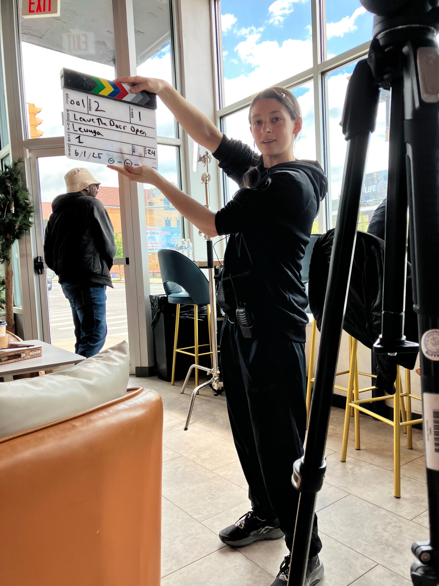
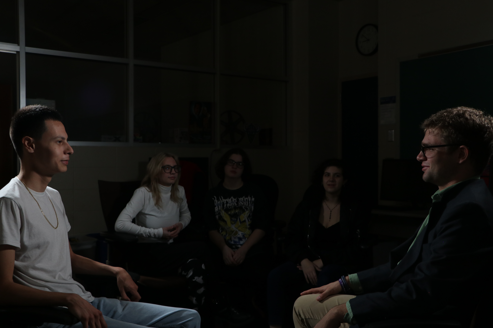
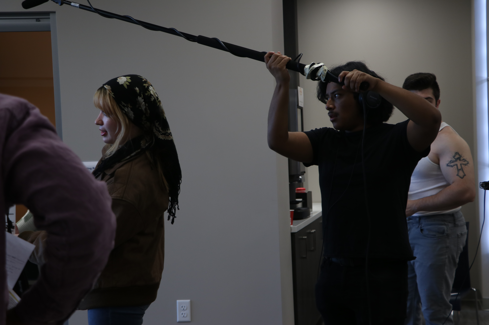
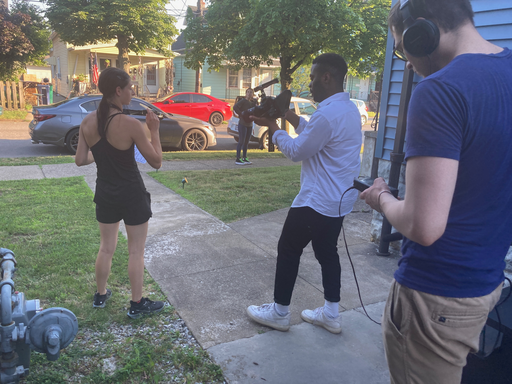
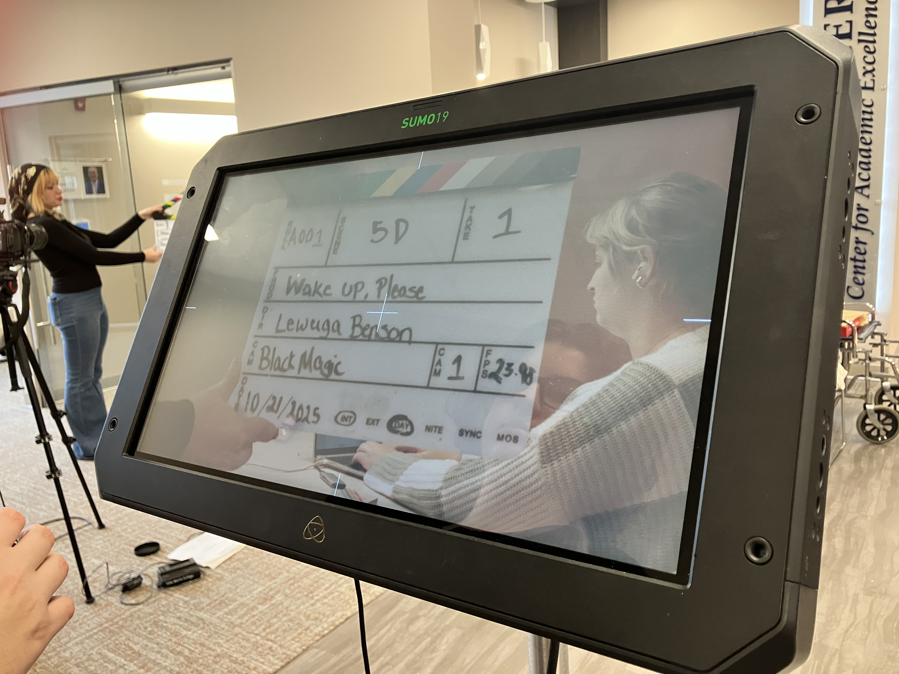
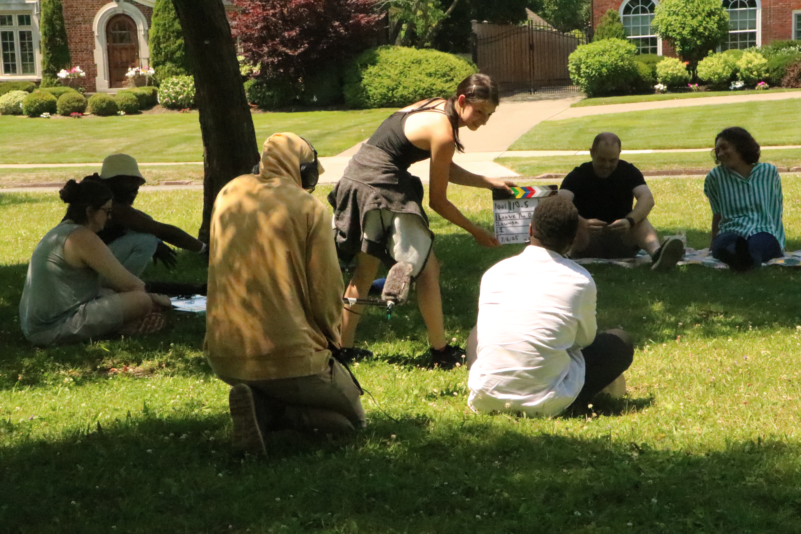

My teaching philosophy is rooted in a hands-on approach — learning by doing. I emphasize real-world scenarios and actionable solutions that push students to go beyond the classroom, helping them develop practical and tactile experience in filmmaking.
I believe the best learning happens through active engagement and creation. My students explore lighting, camera movement, and narrative development through collaborative projects that simulate professional production environments.



Each semester, my classes engage in immersive production sessions that highlight collaboration, creative problem-solving, and adaptability — essential skills for filmmakers navigating real-world challenges.



Through reflective practice, students not only refine their technical skills but also strengthen their voices as storytellers. We discuss how visual choices communicate meaning and how creative risks lead to discovery.